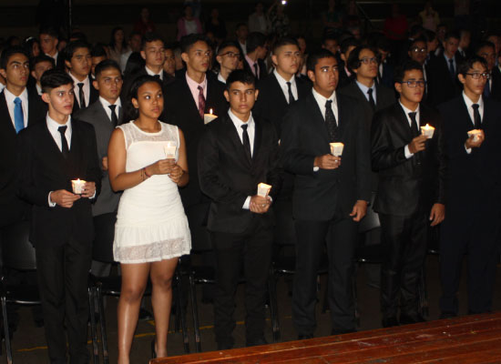

Reseña del Colegio
Somos un colegio de alta calidad que forma en conocimientos para la vida. Formamos en valores Cristianos y Ciudadanos, llevamos a cada niño y joven a encontrarse con Dios y con los demás desde la espiritualidad salesiana. Nuestro modelo pedagógico integrador está basado en competencias, a través del cual se fortalece la investigación. Estamos ubicados en el corazón social y cultural de la ciudad. Una zona céntrica con fáciles vías de acceso.
